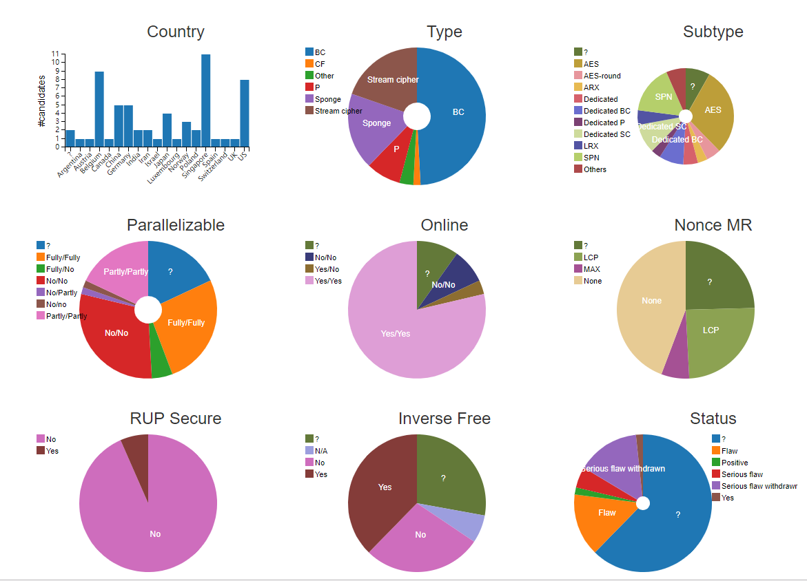
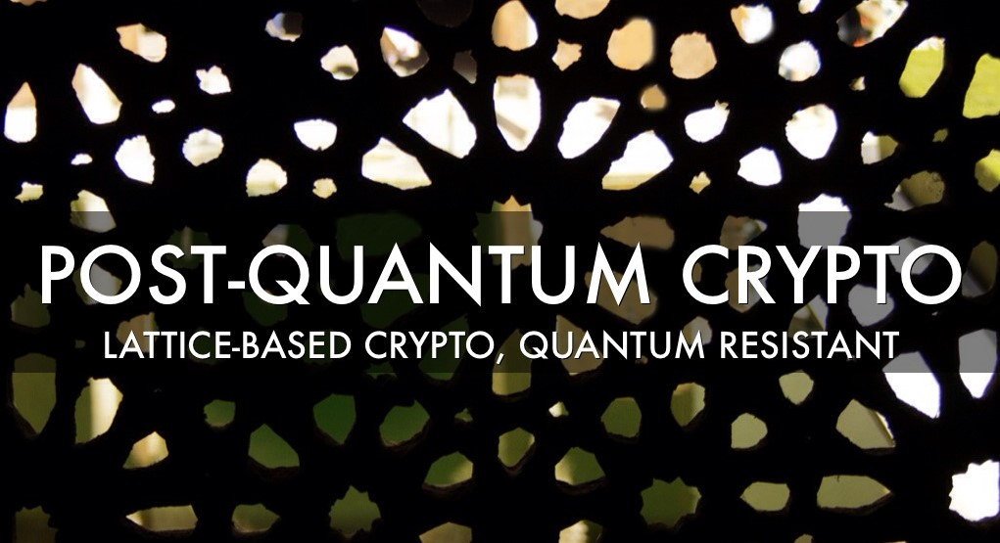
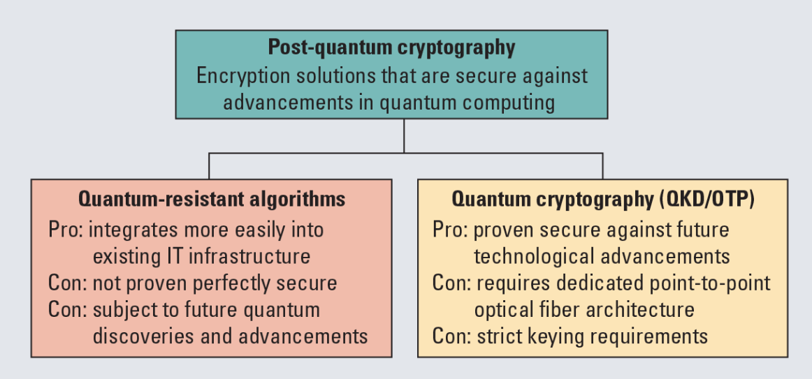

|
欢迎来到张帆的中文主页 计算机科学与技术学院 浙江大学 |
| 我的主页 | 相关新闻 | 发表论著 | 科研活动 | 教学活动 | 奖励荣誉 | 相关信息 | 我的学生 |  |
 |
|
相关链接:
|
密码实现
密码算法是用于加密和解密的数学函数，密码算法是密码协议的基础。现行的密码算法主要包括序列密码、分组密码、公钥密码、散列函数等，用于保证信息的安全，提供鉴别、完整性、抗抵赖等服务。
轻量级分组密码实现
同互联网一样，物联网也存在信息安全问题。为了确保信息不会被窃取、被篡改、被伪造、被抵赖，物联网安全需要密码技术支撑。由于物联网上使用的RFID、传感器等芯片计算能力、存储资源、功率消耗受限，难以运行传统的重量级密码算法。在这种情况下，轻量级密码算法应运而生，旨在安全性、面积功耗、时延速度等方面进行折中，欧美相继开展了轻量级密码算法征集计划，提出了多个轻量级分组密码、序列密码、公钥密码、哈希算法、认证加密算法等。
目前，典型的轻量级分组密码包括PRESENT、MIBS、GOST、KLEIN、LED、Piccolo、LBlock、PRINCE、Midori等，大都可在3000个门电路内硬件实现。轻量级分组密码安全性分析主要从两个方面考虑。一是设计安全性，主要利用差分分析、线性分析、代数分析及其变种实施，找到算法设计的安全性下限，由于攻击复杂度较高，很少能对密钥安全性构成实际威胁。二是实现安全性，主要利用芯片运行中的执行时间、功率消耗、电磁辐射以及注入故障得到的错误信息进行密钥恢复，这种方法被称之为旁路分析。
 | ||
| 物联网和轻量级密码 | 轻量级分组密码算法的评价差异性 |
认证加密算法实现
传统对称加密算法一般只提供了消息的机密性，消息认证算法只能保证消息的完整性。为同时满足众多应用场景下需要的机密性和完整性，认证加密(AE: Authenticated Encryption)算法应运而生，将加密算法和消息认证算法融为一体，具有广泛的研究和应用前景。
CAESAR竞赛是NIST在全球范围内进行的一个AE征集竞赛，是国际密码学界继AES竞赛、NESSIE项目、SHA-3竞赛之后的又一重大的、里程碑式的事件。整个竞赛周期为2013至2018年，分四个轮次进行，旨在筛选出能够同时满足完整性、机密性以及健壮性的AE，综合性能表现以及安全等级能够高于AES-GCM算法。最终获胜的7个算法已经公布。
 |
| Elena Andreeva关于凯撒竞赛认证加密算法的相关统计 |
国密算法实现
国密即国家密码局认定的国产密码算法，即商用密码。商用密码，是指能够实现商用密码算法的加密、解密和认证等功能的技术。（包括密码算法编程技术和密码算法芯片、加密卡等的实现技术）。商用密码技术是商用密码的核心，国家将商用密码技术列入国家秘密，任何单位和个人都有责任和义务保护商用密码技术的秘密。
国密算法是国家密码局制定标准的一系列算法。其中包括了对称加密算法，椭圆曲线非对称加密算法，杂凑算法。具体包括SM1,SM2,SM3等，其中：SM2为国家密码管理局公布的公钥算法，其加密强度为256位。其它几个重要的商用密码算法包括：SM1，对称加密算法，加密强度为128位，采用硬件实现； SM3，密码杂凑算法，杂凑值长度为32字节，和SM2算法同期公布； SMS4，对称加密算法，随WAPI标准一起公布，可使用软件实现，加密强度为128位。
目前，部分的国密算法已经通过了ISO的相关认证，成为了国际标准。最新公布的OpenSSL密码库中已经包含了相关的国密算法实现。
后量子密码实现
在当前的网络通信协议中，使用范围最广的密码技术是RSA密码系统、诸如ECDSA/ECDH等ECC密码系统以及DH密钥交换技术，这些通用密码系统共同构成了确保网络信息安全的底层机制。诸如大数分解（integer factorization）和离散对数（discrete logarithm）等经过长期深入研究的数学问题构建出上述先进加密技术的底层机制，而且此类困难问题在过去数十年间的运行过程中表现出了充分的可靠性。但随着量子计算机技术不断取得突破，特别是以肖氏算法为典型代表的量子算法的提出，相关运算操作在理论上可以实现从指数级别向多项式级别的转变，这些对于经典计算机来说足够“困难”的问题必将在可预期的将来被实用型量子计算机轻易破解。
后量子密码（post-quantum cryptography），又被称为抗量子密码（quantum-resistantcryptography），是被认为能够抵抗量子计算机攻击的密码体制。此类加密技术的开发采取传统方式，即基于特定数学领域的困难问题，通过研究开发算法使其在网络通信中得到应用，从而实现保护数据安全的目的。后量子密码的应用不依赖于任何量子理论现象，但其计算安全性据信可以抵御当前已知任何形式的量子攻击。尽管大数分解、离散对数等问题能够被量子计算机在合理的时间区间内解决，但是基于其他困难问题的密码体制依然能够对这种未来威胁形成足够防御能力。更为重要的是，它们还可以与当前网络系统实现较高程度的兼容，从而会减小当前密码系统向后量子密码迁移可能面临的阻力。
 |  | |
| 后量子密码学 | PQC、QRC、QKD |
AES-NI指令集
AES-NI是一个x86指令集架构的扩展，用于Intel和AMD微处理器，由Intel在2008年3月提出。该指令集的目的是改进应用程序使用高级加密标准（AES）执行加密和解密的速度。这项技术在从企业级的大数据、区块链到个人用的NAS等都用得上。
最后一次更新时间:
版权所有©2019: 张帆